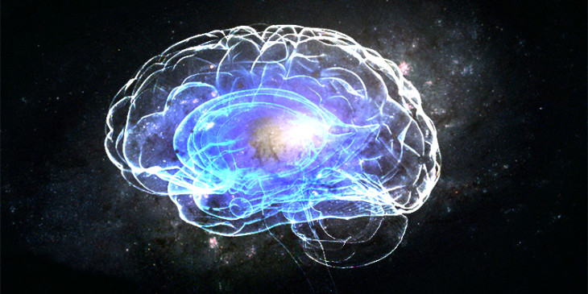

L'intelligenza artificiale e l'intelligenza biologica
Published on 15 June 2016La vita e la comparsa dell'intelligenza biologica
La storia dell'intelligenza sulla Terra iniziò ben 3.5 miliardi di anni fa con la comparsa dei primi esseri viventi unicellulari. A quel tempo la superficie della Terra si trovava sotto un intenso bombardamento di meteoriti e vi erano costantemente intensi fenomeni vulcanici. In questo periodo grandi quantità di acqua si formarono grazie agli impatti di comete ghiacciate e inoltre i gas che venivano rilasciati dai vulcani formarono l'atmosfera terrestre. Comparvero cosi oceani, ghiacciai e le prime nuvole: la Terra ha infatti la particolare caratteristica di trovarsi nella cosiddetta "zona abitabile", cioè si colloca ad una particolare distanza dal sole che gli permette di avere acqua liquida sulla superficie. E' proprio la presenza dell'acqua che ha permesso alla materia di formare le prime molecole organiche cioè strutture atomiche particolarmente complesse, indispensabili per la vita. Gli atomi (specialmente quelli di carbonio che possono creare strutture molto complicate e ricche di informazioni facendo quattro legami in direzioni diverse) formarono le prime molecole della vita. Successivamente comparve una interessante molecola cioè il DNA, la quale permise di codificare lunghe stringhe di informazione e generare organismi viventi. Circa un miliardo di anni più tardi questi organismi svilupparono un sistema di comunicazione cioè il sistema nervoso, il quale gli permise di coordinare in modo sempre più complesso varie parti del corpo e inoltre permise la formazione di meccanismi che facilitarono la loro sopravvivenza. Il sistema nervoso permise agli esseri viventi di reagire immediatamente ai cambiamenti dell'ambiente circostante... -rettili, sistema limbico -mammiferi, corteccia celebrale, cultura -essere umano
Il cervello umano
Il cervello umano è considerato l'oggetto più complesso dell'universo, basti pensare che è stato calcolato che contiene mediamente 100 miliardi di neuroni, ognuno di questi ha in media 10 mila connessioni con altri neuroni vicini che danno origine ad una rete di circa 100 trilioni di connessioni. Vi sono più connessioni in un cervello umano che stelle nella intera via lattea. Da questo sistema biologico emerge l'intelligenza cioè la capacità di affrontare e risolvere con successo situazioni e problemi nuovi o sconosciuti.